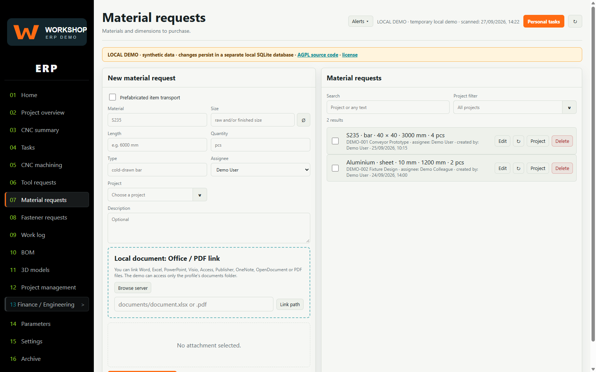
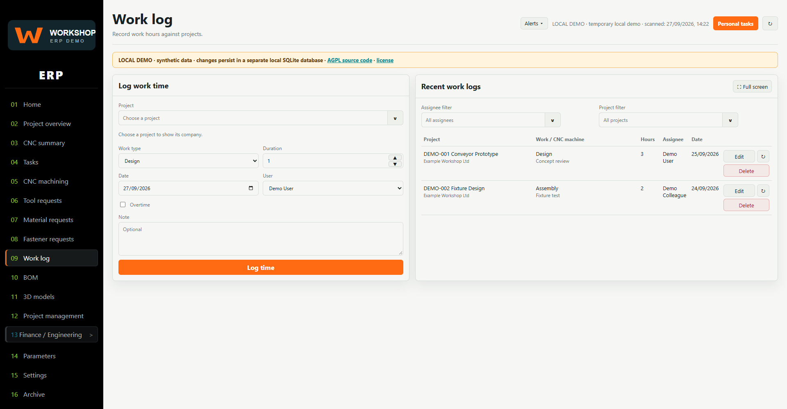
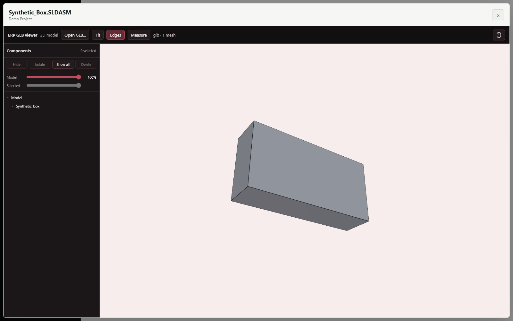
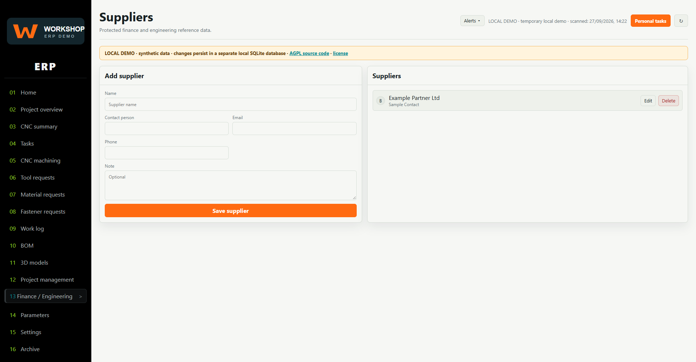

One place for the work behind the work.
Explore a workshop ERP shaped by real engineering and manufacturing workflows—projects, tasks, requests, worklogs, documents and 3D models—in a synthetic-data copy you run on your own PC.
25 views · persistent local sample data · AGPL-3.0-or-later
 Real interface. Synthetic records.
Real interface. Synthetic records.A practical system, made shareable.
This public copy keeps the breadth of the original interface while replacing company records with generic examples and keeping all data on the local machine.
Connected workshop workflows.
The demo has working local records and deliberately limited integrations. It is useful for exploration and adaptation—not a drop-in production deployment.
Plan projects and work
Coordinate project records, tasks, CNC work, priorities and a production schedule.
Request what a job needs
Track materials, fasteners and tools, with local document links and simple BOM imports.
Keep context together
Browse local drawings and PDFs, log time and attach images within a profile-contained sandbox.
Inspect models in the browser
Import a synthetic GLB pair and view, select and measure its geometry locally.
The interface, without company data.
These approved screenshots come from a separate synthetic localhost profile. No production database or live company page was used.




Run the demo on your PC.
Install Node.js 22.5 or newer, clone the repository, then create the editable local config once. The server binds only to 127.0.0.1; it does not connect to a company database or start a tunnel.
git clone https://github.com/simonsystem609/ERP_Workshop.git cd ERP_Workshop npm run setup npm run check npm start # Open http://127.0.0.1:4777/
Honest demo boundary
The finance area is incomplete. The original company backend is included as guarded source and cannot start; Helper, push, hosted authentication and multi-PC/Cloudflare operation are not enabled. The default sample mode has no login. Do not put private records into a publishable profile or expose this server beyond localhost.